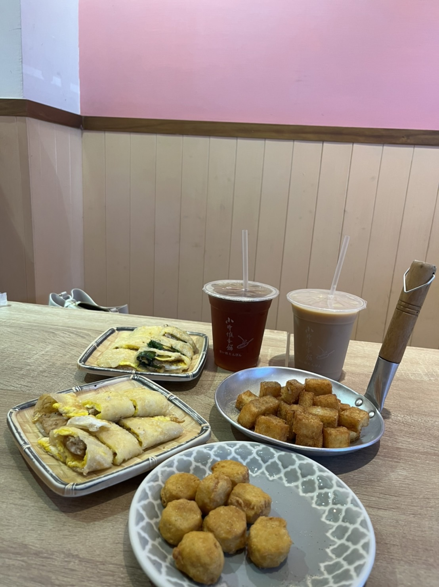

ღ 阿飛Brunch ღ
位於台中新時代旁巷弄裡的溫馨早午餐店，鄰近台中火車站，附近有平價收費停車場，相當好停車！
「阿飛Brunch」有著木質調系的門面，結合了綠意盎然的植栽，店內牆面是由老闆娘創作的各式畫作與植物塗鴉，彷彿來到一間充滿綠洲的早午餐店，很讓人放鬆的地方！
「阿飛Brunch」店招牌是老闆的自畫像，是使用老闆女兒的小名。門面充滿綠意植栽的風格，適合打卡的好地方。餐點皆為現點現做，有早午餐盤、沙拉、飯食、湯品以及各式小點心、飲料等等選擇
營業時間：9:00-17:00週二公休


ღ 小時候蛋餅 ღ
位在台中高工附近的美食，高工路上的早餐店手工蛋餅是超人氣，小小的一攤，生意非常好手工餅皮薄嫩Q彈，不論烤肉蛋餅或九層塔蛋餅，沾上自製的蒜蓉醬都美味。
營業時間：5：00-12：30
週一公休
